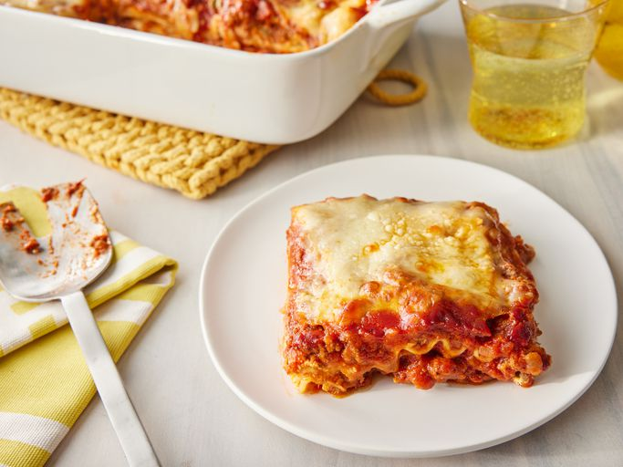

Home
Lasagna

Description
Lasagna, also known as lasagne is a type of pasta - possibly one of the oldest - made in the form of very wide, flat sheets.
In Italian cuisine, it is made of stacked layers of pasta alternating with fillings, such as ragù, Béchamel sauce, vegetables, cheeses, seasonings and spices.
The dish may be topped with grated cheese, which melts during baking.
Typically cooked pasta is assembled with the other ingredients and then baked in an oven (al forno).
The resulting baked pasta is cut into single-serving square or rectangular portions.
Ingredients
- Sweet Italian sausage (1 pound)
- Lean ground beef (¾ pound)
- Minced onion (½ cup)
- Garlic (2 cloves, crushed)
- Crushed tomatoes (1 can = 28 ounces)
- Tomato sauce (2 cans = 6.5 ounces)
- Tomato paste (2 cans = 6 ounces)
- Water (½ cup)
- White sugar (2 tablespoons)
- Chopped, fresh parsley (4 teaspoons, divided)
- Dried basil leaves (1½ teaspoons)
- Salt (1½ teaspoons, divided)
- Italian seasoning (1 teaspoon)
- Fennel seeds (½ teaspoon)
- Ground black pepper (¼ teaspoon)
- Lasagna noodles (12 pieces)
- Ricotta cheese (16 ounces)
- Egg (1 piece)
- Mozzarella cheese (¾ pound, sliced)
- Parmesan cheese (¾ cup, grated)
Steps
- Ensure all the ingredients required are available.
- Cook sausage, ground beef, onion, and garlic in a Dutch oven over medium heat until well browned.
- Stir in crushed tomatoes, tomato sauce, tomato paste, and water. Season with sugar, 2 tablespoons parsley, basil, 1 teaspoon salt, Italian seasoning, fennel seeds, and pepper. Simmer, covered, for about 1½ hours, stirring occasionally.
- Bring a large pot of lightly salted water to a boil. Cook lasagna noodles in boiling water for 8 to 10 minutes. Drain noodles, and rinse with cold water.
- In a mixing bowl, combine ricotta cheese with egg, remaining 2 tablespoons parsley, and ½ teaspoon salt.
- Preheat the oven to 375°F (190°C).
- To assemble, spread 1½ cups of meat sauce in the bottom of a 9x13-inch baking dish. Arrange 6 noodles lengthwise over meat sauce, overlapping slightly. Spread with ½ of the ricotta cheese mixture. Top with ⅓ of the mozzarella cheese slices. Spoon 1½ cups meat sauce over mozzarella, and sprinkle with ¼ cup Parmesan cheese.
- Repeat layers, and top with remaining mozzarella and Parmesan cheese. Cover with foil: to prevent sticking, either spray foil with cooking spray or make sure the foil does not touch the cheese.
- Bake in the preheated oven for 25 minutes. Remove the foil and bake for an additional 25 minutes.
- Rest lasagna for 15 minutes before serving.
Home